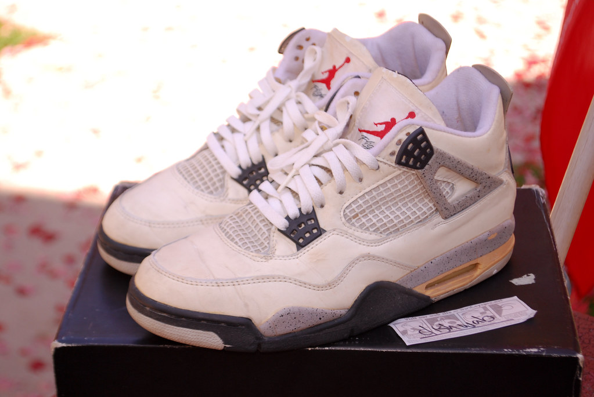

Jordan 4
Debuting in 1989, the Air Jordan 4 marked a turning point for the Jordan Brand. Designed by Tinker Hatfield, successor to the iconic Air Jordan 3, the 4 took a more stylistic approach. It incorporated innovative features like breathable mesh panels and visible Air cushioning technology in the heel, enhancing both performance and aesthetics. The shoe also famously introduced the "Flight" logo on the tongue, further solidifying the brand's identity. Its association with Michael Jordan's on-court dominance during the late 80s and a memorable cameo in Spike Lee's "Do the Right Thing" cemented the Air Jordan 4's place in pop culture history. Throughout the years, the 4 has seen numerous colorways and special releases, remaining a favorite among sneakerheads and a symbol of basketball heritage and innovation.